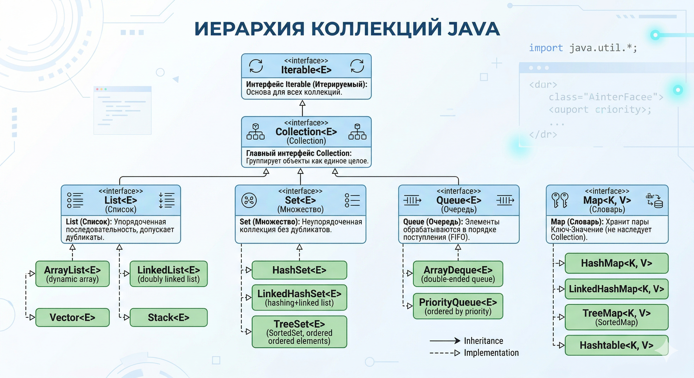

Collections¶
Иерархия коллекций и базовые интерфейсы¶

1. Вершина эволюции: Iterable и Collection¶
Вся иерархия начинается с интерфейса Iterable. У него всего одна главная задача: он говорит JVM, что "по этому объекту можно пройтись в цикле for-each". Он возвращает Iterator, который умеет шагать по элементам (hasNext(), next()).
От него наследуется интерфейс Collection. Это базовый контракт для группы элементов. Он добавляет фундаментальные методы, которые должны уметь делать все стандартные коллекции: add(), remove(), size(), contains(), clear().
2. Главный вопрос с подвохом: Почему Map — это не Collection?¶
На собеседовании обязательно спросят: "Почему List и Set наследуются от Collection, а Map стоит особняком?"
Ответ кроется в Принципе разделения интерфейсов (Interface Segregation из SOLID):
Collectionоперирует одиночными элементами (Values). Ее базовый метод:add(Element e).Mapоперирует парами (Key → Value). Ее базовый метод:put(Key k, Value v).
Если бы разработчики Java заставили Map унаследоваться от Collection, им пришлось бы реализовать метод add(Element). А что он должен был бы делать в мапе? Каким был бы ключ? Это сломало бы всю логику структуры данных. Поэтому Map — это абсолютно независимая ветка со своим интерфейсом.
3. Большая тройка коллекций: List, Set и Queue¶
От интерфейса Collection отходят три главные ветки. Каждая из них добавляет свои уникальные правила к базовому контракту.
List (Список) — Контракт порядка и индексов
- Элементы хранятся строго в том порядке, в котором их добавили.
- У каждого элемента есть порядковый номер (индекс). Появляются методы вроде
get(int index). - Дубликаты разрешены.
- Пример: История отметок пользователя за неделю строго по дням.
Set (Множество) — Контракт уникальности
- В коллекции не может быть двух одинаковых элементов.
- Нет индексов и (в большинстве реализаций) нет гарантии сохранения порядка добавления.
- Если попытаться добавить элемент, который там уже есть, метод
add()просто вернетfalse. - Пример: Хранение списка уникальных названий привычек.
Queue (Очередь) — Контракт обработки
- Элементы хранятся в порядке, в котором они должны быть обработаны (обычно FIFO — First In, First Out).
- Специальные методы:
offer()(безопасное добавление),poll()(достать и удалить из начала),peek()(просто посмотреть на первый, не удаляя). - Пример: Очередь отправки push-уведомлений.
4. Засада с equals() и hashCode()¶
Без правильного переопределения этих методов структуры данных, основанные на хэшировании (HashSet, HashMap), просто сломаются логически.
Практический сценарий: Есть класс Habit. Создаем два объекта и добавляем в HashSet:
- Если НЕ переопределил
equals()иhashCode():HashSetпосмотрит на адреса в памяти (они разные — два вызоваnew), посчитает хэши от адресов и положит объекты в разные корзины. В итоге вSetокажется два логически одинаковых объекта. Контракт уникальности нарушен! - Если ПЕРЕОПРЕДЕЛИЛ:
HashSetвычислит одинаковый хэш-код (строка "Бег" одинаковая), сравнит объекты черезequals()и вернетfalse. Дубликат не добавится.
Золотое правило
Если объект планируется использовать в качестве ключа в Map или элемента в Set, переопределение equals() и hashCode() обязательно.
Списки (Lists): ArrayList vs LinkedList¶
1. Устройство ArrayList под капотом (Динамический массив)¶
ArrayList — это умная обертка над самым обычным массивом Object[].
- Как он создается:
new ArrayList<>()создает пустой массив. При добавлении первого элемента массив инициализируется дефолтным размером (Capacity) — 10 элементов. - Динамическое расширение (Resizing): Что делает
ArrayList, когда ты пытаешься добавить 11-й элемент?- Создается абсолютно новый массив.
- Размер вычисляется по формуле:
oldCapacity + (oldCapacity >> 1)— битовый сдвиг вправо на 1 — это деление на 2. Массив увеличивается в 1.5 раза (16 → 24 → 36...). - Старый массив копируется в новый через нативный
System.arraycopy(). - Старый массив уходит в Garbage Collector.
- Сложность доступа:
get(index)работает за O(1), так как адреса в массиве вычисляются мгновенно.
2. Устройство LinkedList под капотом (Двусвязный список)¶
LinkedList — цепочка независимых объектов-узлов (Node). Никакого единого массива внутри.
- Каждый узел хранит: сами данные (
item), ссылку на следующий узел (next), ссылку на предыдущий узел (prev). - Сложность доступа: Чтобы найти 500-й элемент,
LinkedListвынужден начать с головы (или хвоста) и последовательно перебирать узлы. Доступ по индексу — O(n).
3. Разрушение мифа о вставке в середину¶
Интервьюер задает классический вопрос: "Мне нужно вставить элемент в середину списка из миллиона элементов. Что быстрее: ArrayList или LinkedList?"
Ожидаемый неверный ответ джуна: "Конечно LinkedList! Вставка O(1), просто перекинем ссылки. А ArrayList сдвинет полмиллиона элементов — O(n)."
Ответ сеньора — почему ArrayList победит:
- Проблема поиска узла: Сама операция вставки в
LinkedList— O(1). Но чтобы добраться до середины, нужно сначала её найти — а это O(n) перебора. - Скорость сдвига массива:
ArrayListсдвигает элементы черезSystem.arraycopy(). Это низкоуровневая команда на C++, которая перемещает гигантские блоки памяти разом. Практически — в сотни раз быстрее перебора узлов.
4. Магия кэша процессора (Cache Locality)¶
Произнеси фразу "Cache Locality" на интервью — это сразу покажет понимание архитектуры "железа".
- Процессоры читают из RAM не по одному байту, а целыми блоками (Cache Line). Запросил
ArrayList[0]— в кэш процессора подтянулись[1],[2],[3]и т.д. - Так как массив лежит в памяти сплошным непрерывным куском, следующие итерации цикла читают прямо из кэша — молниеносно.
- Узлы
LinkedListразбросаны по Куче хаотично. Каждый переход по ссылкеnext— гарантированный Cache Miss (промах кэша). Процессор каждый раз лезет в медленную RAM.
Итог
LinkedList потребляет в несколько раз больше памяти (объекты Node + хранение ссылок) и катастрофически проигрывает на уровне кэша процессора. В современном коде LinkedList практически не используется. Даже там, где нужна семантика Deque, ArrayDeque справляется лучше.
Магия Хэш-таблиц (HashMap под капотом)¶
1. Как устроена HashMap внутри¶
Под капотом HashMap — это массив объектов Node<K, V>. Каждая ячейка называется бакетом (bucket / корзиной).
- Дефолтный размер:
new HashMap<>()создает массив из 16 бакетов. - Что хранит
Node: ключ (key), значение (value), хэш ключа (hash), ссылку на следующий узел (next).
2. Как вычисляется индекс бакета? (Секрет скорости O(1))¶
При map.put("First", "Developer"):
- Хэш: Вызывается
hashCode()у ключа"First". - Защита: Внутренняя функция
hash()перемешивает биты, чтобы нивелировать плохие реализацииhashCode. - Индекс (Вопрос на сеньора): Как получить индекс от 0 до 15?
- Наивный способ:
hash % 16— работает медленно. - Как в Java на самом деле:
(n - 1) & hash— побитовое И работает со скоростью света на уровне процессора. - Почему размер всегда степень двойки: Формула
(n - 1) & hashработает корректно только когдаn— степень двойки. Попросишьnew HashMap<>(20)— Java сама округлит до 32.
- Наивный способ:
3. Коллизии (Когда два ключа хотят в один бакет)¶
Если два ключа получают одинаковый индекс — это коллизия. Решается методом цепочек (Separate Chaining): новый Node прикрепляется к старому, формируя связный список внутри бакета.
При get(key): вычисляется индекс → прыжок в бакет → если там список, сравниваем через equals() каждый элемент до совпадения.
4. Load Factor и Rehashing¶
Бесконечно накапливать элементы в 16 бакетах нельзя — списки вырастут и поиск замедлится.
- Load Factor =
0.75по умолчанию (баланс памяти и скорости). - Threshold =
Capacity × Load Factor=16 × 0.75 = 12. - Rehashing: При добавлении 13-го элемента:
- Создается новый массив в 2 раза больше (32 бакета).
- Все элементы пересчитывают свои индексы и перекладываются.
Ловушка производительности
Rehashing — очень тяжёлая операция O(N). Если заранее знаешь примерное количество элементов, задай начальный размер сразу: new HashMap<>(135_000) — это избавит от десятков лишних перестроений для 100к элементов.
5. Эволюция в Java 8: Красно-черные деревья¶
До Java 8 при жёстких коллизиях (все элементы в один бакет) мапа вырождалась в длинный список. Поиск падал до O(N). Хакеры использовали это для HashDoS-атак: специально слали запросы с ключами, дающими одинаковый хэш. Процессор загружался на 100%, приложение падало.
Решение в Java 8: Если список в бакете вырастает до 8 элементов (и общий размер мапы > 64), бакет трансформируется в Красно-черное дерево (Red-Black Tree).
- Поиск в дереве: O(log N). Миллион элементов в одном бакете = 20 шагов вместо миллиона.
- Обратно в список — при уменьшении до 6 элементов (экономия памяти: узлы дерева тяжелее).
6. HashMap vs LinkedHashMap vs TreeMap¶
| Характеристика | HashMap | LinkedHashMap | TreeMap |
|---|---|---|---|
| Сложность (put/get) | O(1) (самая быстрая) | O(1) | O(log N) (медленнее) |
| Порядок элементов | Хаотичный | Сохраняет порядок добавления | Сортирует по ключу |
| Внутреннее устройство | Массив + Списки/Деревья | Массив + двусвязный список | Только красно-черное дерево |
| Когда использовать | В 95% случаев | LRU-кэш, сохранение хронологии | Вывод ключей по алфавиту/возрастанию |
Множества (Sets) и уникальность¶
1. Как устроен HashSet под капотом¶
На собеседовании спросят: "Как реализована уникальность в HashSet? Писали новый алгоритм?"
Правильный ответ: Никакого нового алгоритма нет. HashSet — это просто обёртка над HashMap.
// Внутри HashSet:
private transient HashMap<E, Object> map;
private static final Object PRESENT = new Object(); // заглушка-значение
public boolean add(E e) {
return map.put(e, PRESENT) == null; // твой элемент — ключ, PRESENT — заглушка
}
Твой элемент становится ключом в HashMap. А ключи в HashMap всегда уникальны — вся работа по хэшам и коллизиям достается бесплатно. PRESENT — единственный объект на все записи, так что память не тратится.
2. TreeSet и сортировка¶
Обычный HashSet хаотичен. Когда нужны уникальные элементы в отсортированном порядке — берём TreeSet.
- Под капотом:
TreeMap(красно-черное дерево). - Сложность: O(log n) для
add,remove,contains— медленнееHashSet, зато элементы всегда отсортированы.
Но возникает вопрос: "Как TreeSet понимает, что 'больше', а что 'меньше'? Как отсортировать кастомный класс Habit?"
Если положить в TreeSet объект без объяснения порядка — получишь ClassCastException в рантайме. Дерево не поймёт, куда класть элемент.
3. Comparable vs Comparator¶
java.lang.Comparable — Естественный порядок¶
Используй, когда хочешь задать сортировку по умолчанию прямо в самом классе.
- Суть: "Я умею сравнивать себя с другими."
- Реализуется внутри класса:
class Habit implements Comparable<Habit> - Метод:
compareTo(Habit other)— возвращает отрицательное (меньше), 0 (равно), положительное (больше). - Когда: Для очевидной "естественной" сортировки —
Stringпо алфавиту, даты от старой к новой.
public class Habit implements Comparable<Habit> {
private String name;
@Override
public int compareTo(Habit other) {
return this.name.compareTo(other.name); // сортировка по имени
}
}
java.util.Comparator — Внешний судья (Паттерн Стратегия)¶
Что если нужно сортировать по-разному: на главном экране — по дате, в профиле — по приоритету? compareTo один, а логик несколько.
- Суть: "Я — независимый судья, сравниваю два чужих объекта."
- Реализуется снаружи класса: лямбда, анонимный класс или отдельный класс. Передаётся в
TreeSet,Collections.sort(),Stream.sorted(). - Метод:
compare(Habit h1, Habit h2). - Когда: Разная логика сортировки в разных местах; или нельзя изменить исходный код класса.
// Сортировка по приоритету через лямбду
Comparator<Habit> byPriority = (h1, h2) -> h1.getPriority() - h2.getPriority();
TreeSet<Habit> byPrioritySet = new TreeSet<>(byPriority);
// Цепочка: сначала по приоритету, потом по имени
Comparator<Habit> complex = Comparator.comparingInt(Habit::getPriority)
.thenComparing(Habit::getName);
Очереди и Стеки¶
1. Базовые принципы: FIFO и LIFO¶
- FIFO (First-In, First-Out) — классическая Очередь (
Queue). Кто первым встал в очередь в кассу — того первым и обслужат.- Где применяется: Обработка потока задач, брокеры сообщений, алгоритм поиска в ширину (BFS).
- LIFO (Last-In, First-Out) — Стек (Stack). Стопка тарелок: берёшь ту, которую положил последней.
- Где применяется: Стек вызовов в JVM, отмена операций (Ctrl+Z), поиск в глубину (DFS).
2. Почему Stack мертв и да здравствует ArrayDeque¶
Если на собеседовании скажешь "использую java.util.Stack" — это красный флаг. Причины:
- Наследование от
Vector:Stackнаписан в Java 1.0 и унаследован отVector. Стек внезапно получил кучу лишних методов (вставка по индексу в середину) — что ломает саму семантику LIFO. - Синхронизация везде: Все методы
Vector(иStack) помеченыsynchronized. В однопоточной среде — бессмысленная трата ресурсов.
Современная альтернатива: ArrayDeque — двусторонняя очередь на динамическом массиве.
Deque<String> stack = new ArrayDeque<>();
stack.push("A"); // добавить на вершину (LIFO)
stack.pop(); // взять с вершины
Queue<String> queue = new ArrayDeque<>();
queue.offer("A"); // добавить в хвост (FIFO)
queue.poll(); // взять из головы
- Нет синхронизации → быстро.
- Данные в сплошном массиве → кэш процессора доволен.
- Один класс заменяет и стек, и очередь.
3. PriorityQueue: Очередь с приоритетом¶
Обычная очередь — строго FIFO. Но если нужно, чтобы задача с пометкой "КРИТИЧЕСКИЙ БАГ" проскочила вперёд?
Под капотом — Бинарная Min-Heap (минимальная куча), физически хранящаяся в массиве.
- Приоритет определяется так же, как в
TreeSet— черезComparableилиComparatorв конструкторе. - Сложность:
peek()(посмотреть на min) — O(1).poll()иoffer()— O(log n) (перебалансировка кучи).
Ловушка с итерацией
Если вывести PriorityQueue через for-each или println(), элементы не будут в порядке приоритета! Куча гарантирует только одно: самый приоритетный элемент всегда в индексе 0. Строгий порядок — только при последовательных вызовах poll().
| Структура | Интерфейс | Суть | Скорость | Когда использовать |
|---|---|---|---|---|
ArrayDeque |
Deque |
Универсал: и стек, и очередь | O(1) на концах | Очередь задач, обход графов (BFS/DFS) |
Stack |
Collection |
Устаревший | O(1), но с synchronized |
Никогда |
PriorityQueue |
Queue |
Очередь с приоритетом (Binary Heap) | O(log n) | Планировщики, алгоритм Дейкстры, Top-K задачи |
Итераторы и потокобезопасные коллекции¶
1. ConcurrentModificationException: Почему падают итераторы?¶
Один поток бежит по ArrayList в for-each, другой в это время делает add(). Результат — ConcurrentModificationException.
Как итератор это обнаруживает? У стандартных коллекций есть счётчик мутаций — modCount. При каждом add / remove он растёт. Итератор запоминает значение при старте в expectedModCount и при каждом шаге проверяет:
Это называется Fail-Fast: лучше сразу упасть с ошибкой, чем тихо работать с наполовину изменёнными данными и получить скрытый баг в бизнес-логике.
Fail-Safe / Weakly Consistent — подход потокобезопасных коллекций из java.util.concurrent. Они не кидают эту ошибку: работают либо со слепком данных, либо допускают параллельные изменения без падения.
2. Почему нельзя использовать Hashtable и Vector¶
Если на вопрос "Как сделать Map потокобезопасной?" ответишь "Использовать Hashtable" — интервью может закончиться досрочно.
- Проблема: Эти классы из Java 1.0 вешают
synchronizedна все методы целиком (Whole-Object Locking). - Удар по производительности: Если Поток 1 делает
put(), он блокирует ВСЮ таблицу. Потоки 2, 3, 100 — хотят просто прочитать (get()), но вынуждены ждать. В многоядерных системах это катастрофа.
3. ConcurrentHashMap (CHM) — Шедевр¶
Позволяет сотням потоков одновременно читать и писать, почти не блокируя друг друга.
Эволюция CHM:
- Java 7 — Lock Striping: Мапу физически разрезали на 16 сегментов, у каждого свой замок. 16 потоков могут одновременно писать в разные сегменты. Чтение — вообще без блокировок.
- Java 8+ — CAS + блокировка бакета:
- Сегменты убраны (жрали память).
- Если бакет пустой — вставка через CAS (Compare-And-Swap), атомарную операцию уровня процессора, без
synchronized. - Если бакет занят —
synchronizedвешается только на первый узел конкретного бакета. Остальные миллионы бакетов остаются свободными.
Итог
ConcurrentHashMap — выбор по умолчанию для любого кэша или хранилища в многопоточной среде.
4. CopyOnWriteArrayList (COWAL): Копируй при записи¶
Чем Collections.synchronizedList() плох — те же тормоза от synchronized. CopyOnWriteArrayList решает это иначе.
- Чтение (
get,iterator) — без замков, молниеносно. - Запись (
add,remove) — три шага:- Создаётся точная копия всего массива.
- Новый элемент добавляется в копию.
- Атомарно переключается ссылка на новый массив. Старый — в GC.
Когда применять
Копирование массива при каждой записи — очень дорого. Идеальный сценарий: Read-Heavy, Write-Rare (читаем постоянно, пишем крайне редко). Пример: список Event Listeners — подписались при старте, потом миллионы раз просто перебираем для отправки уведомлений.